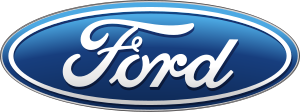

Ford
Brand history
The Ford Motor Company is an American automaker, the world's fifth largest based on worldwide vehicle sales. Based in Dearborn, Michigan, a suburb of Detroit, it was founded by Henry Ford on June 16, 1903. Ford Motor Company would go on to become one of the largest and most profitable companies in the world. The largest family-controlled company in the world, the Ford Motor Company has been in continuous family control for over 110 years. Ford now encompasses two brands: Ford and Lincoln. Ford once owned 5 other luxury brands: Volvo, Land Rover, Jaguar, Aston Martin, and Mercury. Over time, those brands were sold to other companies and Mercury was discontinued.
Models
Ford Mustang
The Ford Mustang is an American automobile manufactured and marketed by Ford since 1964, as Ford's longest nameplate in continuous production. Currently in its seventh generation, it is the fifth-best selling Ford car nameplate. The namesake of the "pony car" automobile segment, the Mustang was developed as a highly styled line of sporty coupes and convertibles derived from existing model lines, initially distinguished by its pronounced "long hood, short deck" proportions.
Ford Fiesta
The Ford Fiesta is a supermini car that was marketed by Ford from 1976 to 2023 over seven generations. Over the years, the Fiesta has mainly been developed and manufactured by Ford's European operations, and had been positioned below the Escort (later the Focus).
Customer reviews
The Ford Mustang may not be as refined or as classy as the European competition - but it gives you hell of a lot of bang for your buck
The Fiesta is a lot of fun to drive for a small car – but you certainly won’t be smiling so hard if you’re asked to sit in the back seats